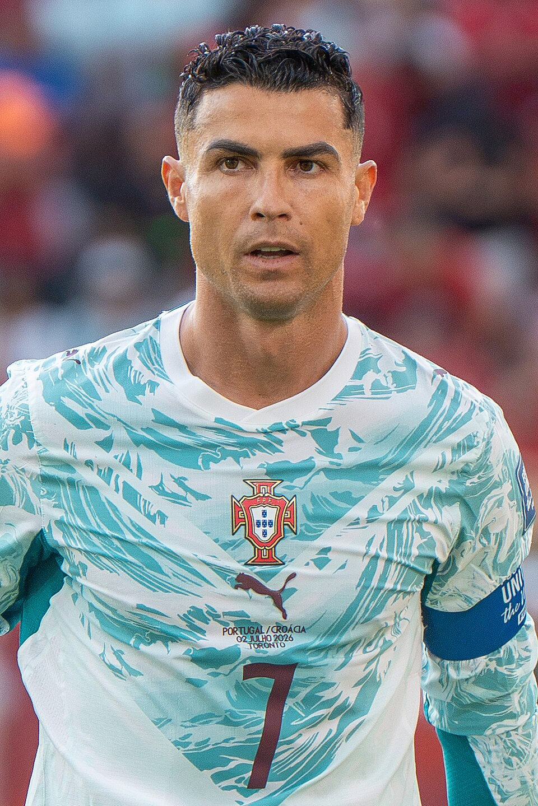
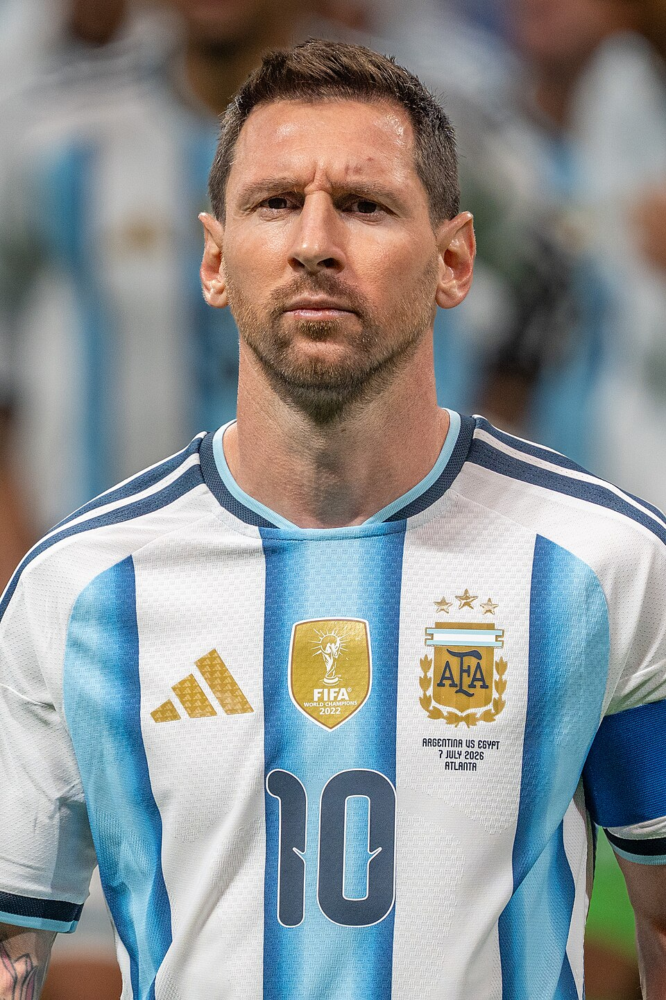
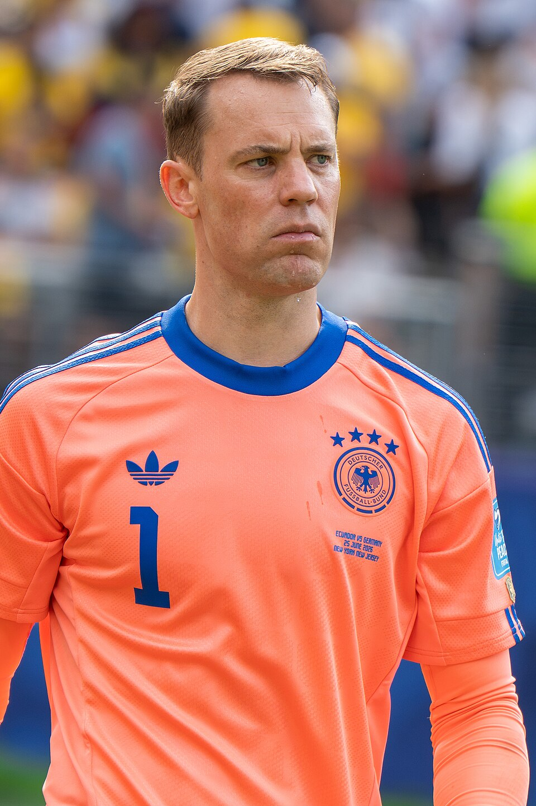

Top 3
1🥇

Cristiano RonaldoPortugal · Real Madrid🏆 2
- ■Group stage FIFA World Cup 20141 Goal, 1 Assist, 1 Big Chance Created, 4 Big Chance Missed
- 🏆UEFA Champions League 2013/1417 Goals, 4 Assists, 4 Big Chance Created, 7 Big Chance Missed
- ■Rank 3 La Liga 2013/1431 Goals, 8 Assists
- ■Pichichi31 Goals
- ■European Golden Shoe31 Goals
- 🏆Copa del Rey 2013/14
- ■Final Supercopa de España 2013/14
2🥈

Lionel MessiArgentina · Barcelona
- ■Final FIFA World Cup 20144 Goals, 1 Assist, 4 Big Chance Created, 3 Big Chance Missed
- ■Golden Ball World Cup 2014
- ■Quarter-finals UEFA Champions League 2013/148 Goals, 0 Assists, 2 Big Chance Created, 2 Big Chance Missed
- ■Rank 2 La Liga 2013/1428 Goals, 11 Assists
- ■Final Copa del Rey 2013/14
- ■Not participate in Supercopa de España 2013/14
3🥉

Manuel NeuerGermany · Bayern Munich🏆 3
- 🏆FIFA World Cup 20140 Goals, 0 Assists, 0 Big Chance Created, 0 Big Chance Missed
- ■Golden Glove World Cup 2014
- ■Semi-finals UEFA Champions League 2013/140 Goals, 0 Assists, 0 Big Chance Created, 0 Big Chance Missed
- 🏆Bundesliga 2013/140 Goals, 0 Assists
- 🏆DFB Pokal 2013/14
- ■Not participate in Franz Beckenbauer Supercup 2013/14
Rank 4 and below 20 players
- 4Arjen RobbenNetherlands · Bayern Munich
- 5Thomas MüllerGermany · Bayern Munich
- 6Philipp LahmGermany · Bayern Munich
- 7NeymarBrazil · Barcelona
- 8James RodríguezColombia · Monaco/Real Madrid
- 9Toni KroosGermany · Bayern Munich/Real Madrid
- 10Ángel Di MaríaArgentina · Real Madrid/Manchester United
- 11Diego CostaSpain · Atlético Madrid/Chelsea
- 12Gareth BaleWales · Real Madrid
- 13Zlatan IbrahimovićSweden · Paris Saint-Germain
- 14Yaya TouréIvory Coast · Manchester City
- 15Mario GötzeGermany · Bayern Munich
- 16Karim BenzemaFrance · Real Madrid
- 17Andrés IniestaSpain · Barcelona
- 18Bastian SchweinsteigerGermany · Bayern Munich
- 19Javier MascheranoArgentina · Barcelona
- 20Thibaut CourtoisBelgium · Atlético Madrid/Chelsea
- 21Eden HazardBelgium · Chelsea
- 22Paul PogbaFrance · Juventus
- 23Sergio RamosSpain · Real Madrid
Photos: Bryan Berlin / WikiPortraits (CC BY-SA 4.0). View all image credits